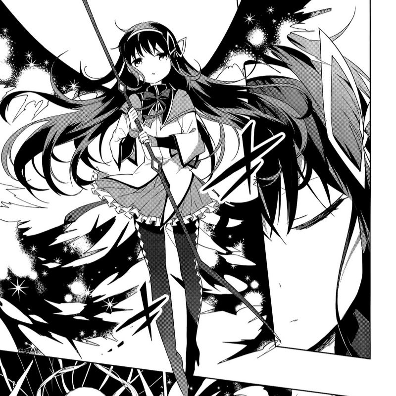
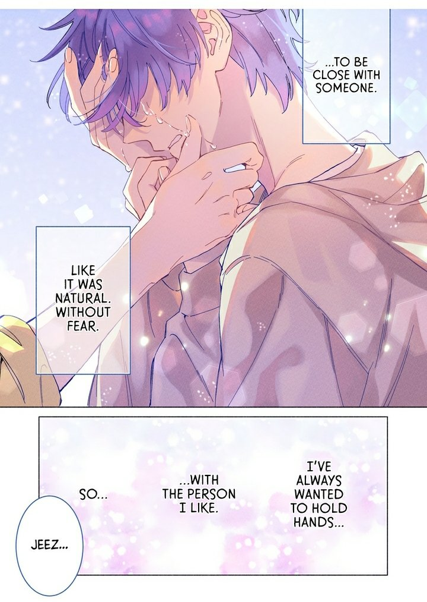
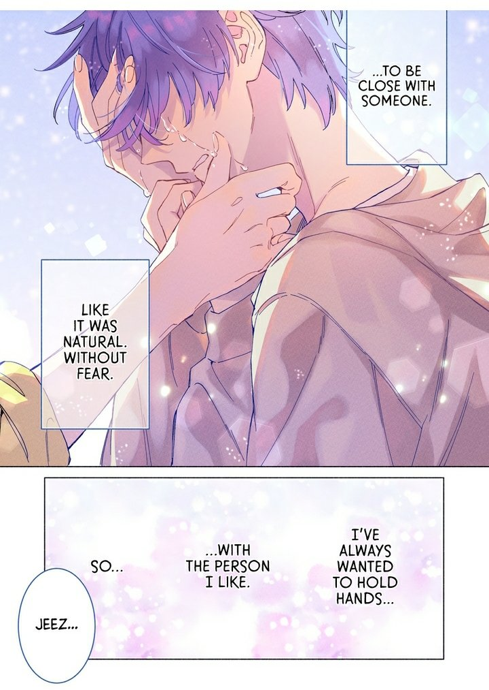
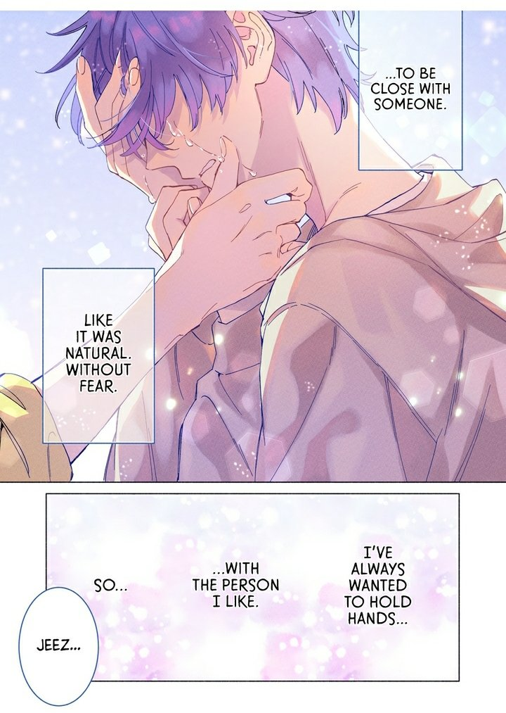

chainsaw man → (ongoing)
fujimoto going to hell bro. but anyways.
the guy she was interested in wasn't a guy at all → (ongoing)
very cute and fun manga to look at though it sure is dragging a lot... but you know what i'll let it slide. green yuri forever.
company and private life → (ongoing)
shelved
my cat is such a weirdo → volume 1/3
250216 → super cute manga about the mangaka's silly cats. got it while visiting florida, US. will eventually read the other volumes some other time.
bloodborne → 13 / ???
finished
i wanna be your girl
260213 → a very sweet read... when i saw the cover for the first volume i hurried so FAST to start reading this. i love stories like these very much that touch upon gender and discovering a loved one isn't who you thought they were this whole time. i could relate a little bit to the protagonist in terms of her issues with gender and expression. not sure i can put in into words in here just yet. i really wanted the mc and the trans mc girl to end up together but of well. i still really liked it nonetheless.
some of the covers for the chapters were so pretty.
and here are some other little moments i really liked as well.
puella magi madoka magica: wraith arc
250216 → basically a tie in between the anime and and rebellion. which tbh i don't think it was necessarily needed, but pretty cool it's there. and this is also considered sort of a spin off so i don't really know if this is canon or not in the lens of the whole story. it terms of it's story it does provide a more clear view of how homura turned out to be trapped (alongside the others) in her own witch labyrinth in rebellion. it was nice to see more about how wraiths work and how are they any different from witches. alsoooo soo interesting to know that homura now has memory altering powers in this version of her since her shield 'supposedly' didn't work in this timeline.
while i obviously prefer the art of the anime, the art style of the manga series is pretty good as well!

shes's so badass
villain
idk man that was beautiful.

mob psycho 100 ❤︎
blue
look back ❤︎
goodbye, eri
our dreams at dusk
the little prince ❤︎
paper girls ❤︎
the girl from the sea ❤︎
uzumaki
remina
my lesbian experience with loneliness ❤︎
homestuck
a very formative piece of media... if you know you know.

.jpg)
.jpg)
.jpg)
.jpg)
.jpg)
.jpg)
.jpg)
.jpg)
.jpg)
.jpg)
.jpg)
.jpg)
.jpg)
.jpg)
.jpg)
.jpg)


.jpg)
.jpg)
.jpg)
.jpg)
.jpg)
.jpg)
.jpg)

 

.jpg)
.jpg)